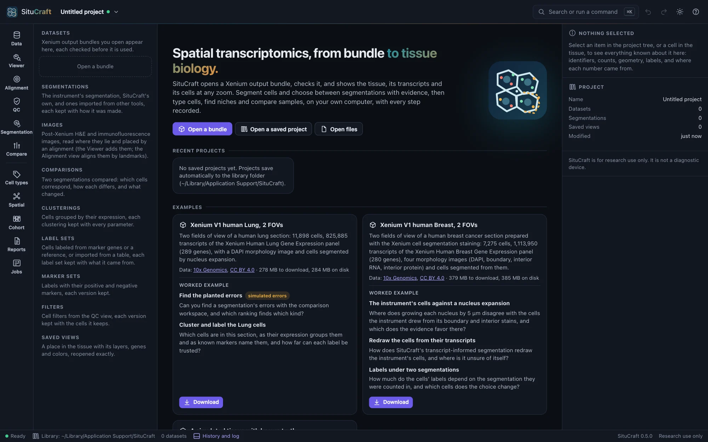
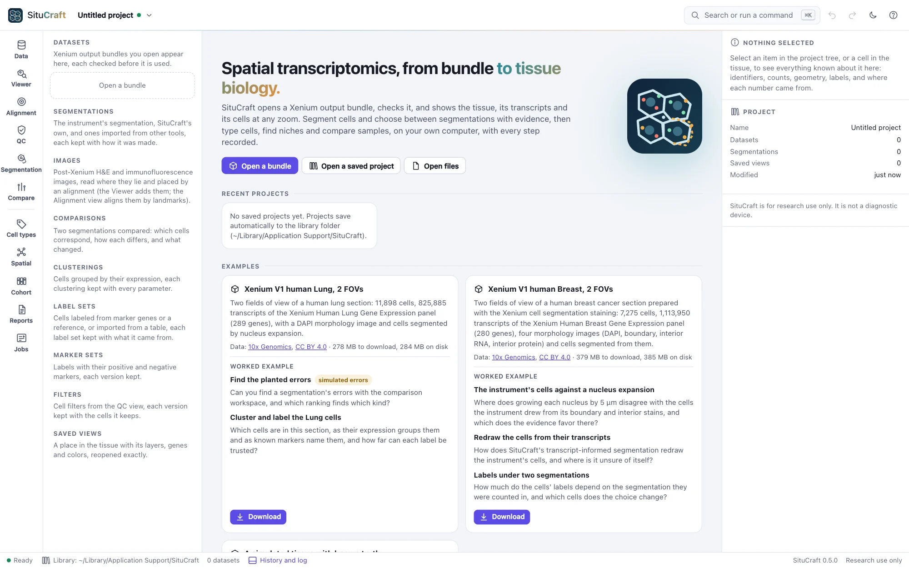
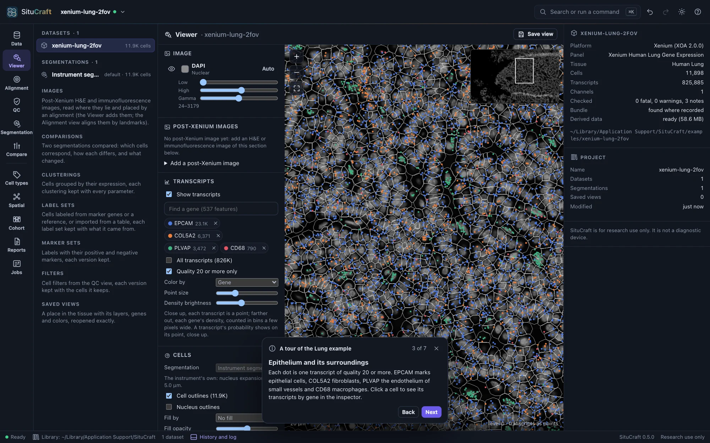
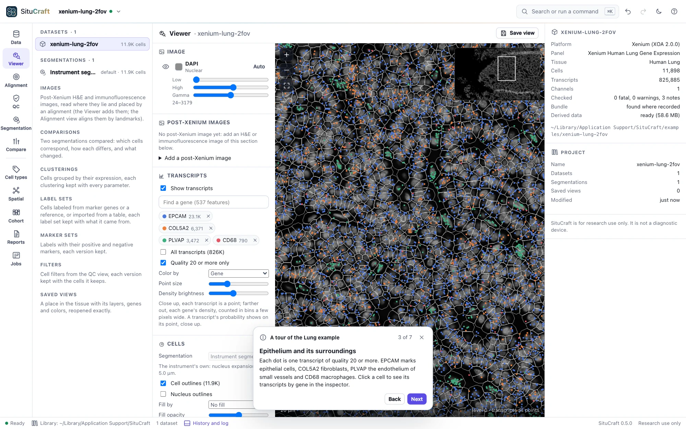
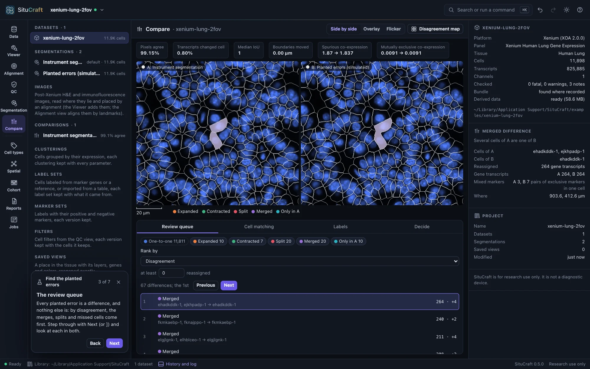
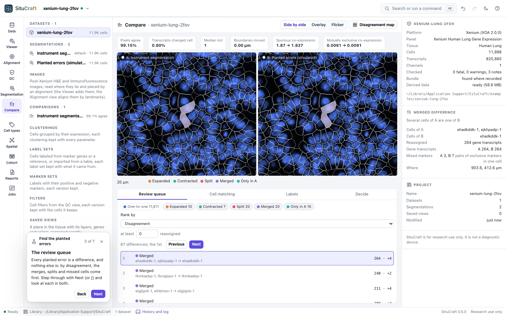
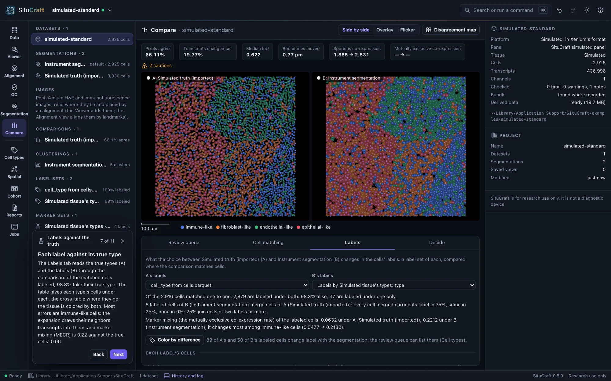
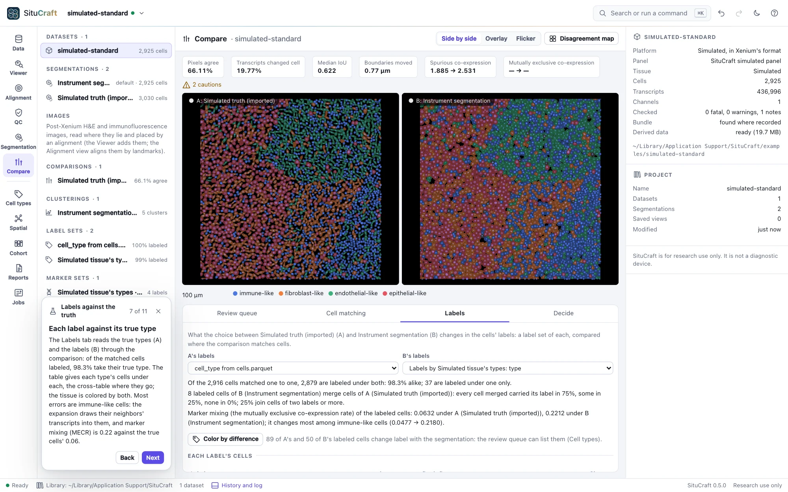
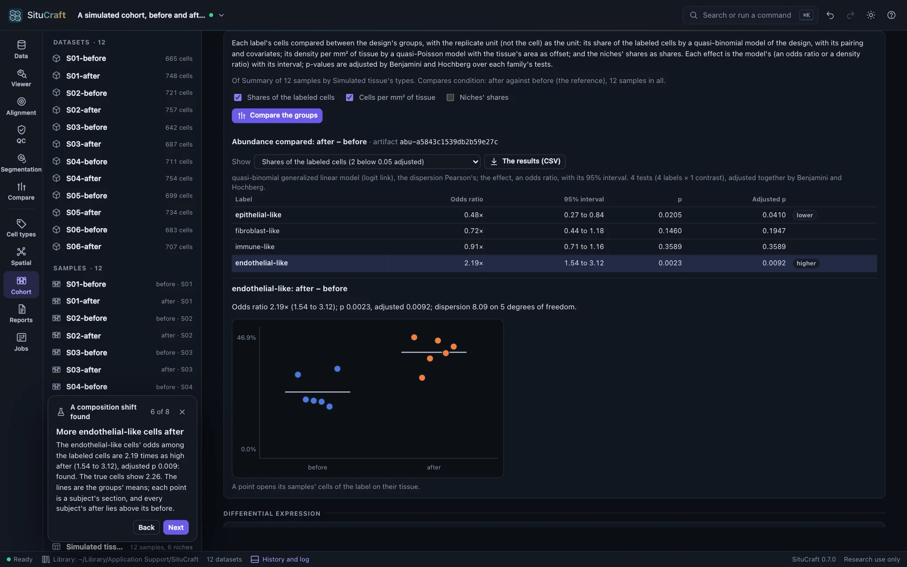
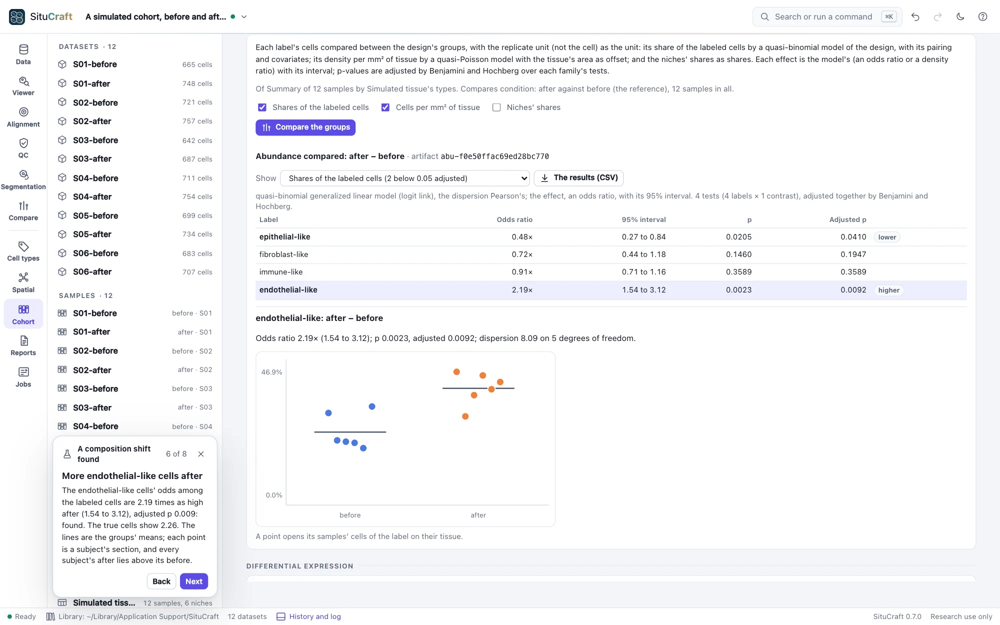

Getting started
Install SituCraft, start it, and try it on an example: two public Xenium sections from 10x Genomics, a simulated tissue whose every cell is known, or simulated cohorts of subjects in groups. A tour and worked examples take you through it.
Install and start it
Install SituCraft with the one-line installer (Install), then run:
$ situcraftSituCraft opens in its own window: Chrome, Edge, Brave or Chromium in app mode if you have one, else your default browser. The terminal shows where it keeps your projects, its cache and the example datasets. Closing the window stops SituCraft (--keep-running keeps it serving).
The start page offers your recent projects, the example datasets and Open a bundle.
Try an example


Under Examples, two public Xenium bundles from 10x Genomics (CC BY 4.0) are ready to download, and a simulated tissue and three simulated cohorts are ready to make:
| Example | Download | On disk | What it shows |
|---|---|---|---|
| Xenium V1 human Lung, 2 FOVs | 278 MB | 284 MB | 11,898 cells, 825,885 transcripts, 289 genes, a DAPI image, nucleus-expansion segmentation |
| Xenium V1 human Breast, 2 FOVs | 379 MB | 385 MB | 7,275 cells, 1,113,950 transcripts, 280 genes, four stains, multimodal cell segmentation |
| A simulated tissue with known truth | none: made here in seconds | 42 MB | 3,030 cells of four types, 436,996 transcripts, 120 genes, a DAPI image, nucleus-expansion segmentation, an H&E and an immunofluorescence image of the section stained after the run, and the truth: every cell's, transcript's and type, and where each image's pixels lie |
| A simulated cohort | none: made here in seconds | 64 MB | 8 sections of 250 × 250 µm, four subjects in each of two groups (control and treated) on two slides, with known effects between the groups (a type's odds, a type's odds in another's domains, a gene's level in a type) and each section differing from the others by chance; each sample's subject and condition read in with it, and the truth of every effect and sample beside it |
| A simulated null cohort | none: made here in seconds | 68 MB | The same design with no difference between the groups: every section differs from the others only by chance |
| A simulated cohort, before and after | none: made here in seconds | 95 MB | Six subjects, each sampled before and after (12 sections on two slides), with known effects after; a subject's two sections share part of their variation, as one person's tissue does |
Download fetches one from 10x Genomics, checks the archive and every file against recorded checksums, keeps only the bundle and deletes the archive. Nothing is downloaded until you ask. Make it simulates the tissue or cohort with SituCraft's settings (situcraft simulate --post-xenium makes the same tissue, byte for byte, and situcraft simulate --cohort standard, null or paired the same cohort); each is labeled simulated wherever it is shown. A cohort's samples are added to a project together, each with its subject and condition. One made by an earlier SituCraft, without the H&E, offers Make it again: the same run, cells and transcripts, with the images.
Each example is used under its license; its source and license are linked on its card, and the methods cite it.
The tour
When a 10x Genomics example is ready, Take the tour: seven steps through the Data view, the Viewer and QC. Use Next and Back on the card at the foot of the window; you can explore at any step, and the tour continues from there.


Worked examples
Each example also has worked examples: a question answered step by step, saying first what to expect. Some steps run a job before going on (the card's button says what it does: expand the nuclei, plant errors, refine, import the truth, compare, cluster, label, make the labels again on another segmentation, add the H&E, place landmarks, align it automatically, check its alignments, draw regions and write them for QuPath, decide the review queue's first cells, exclude a fold, import the truth's domains, build a graph of which cells are neighbors, ask a spatial question, make an answer again on another segmentation, set the samples, describe the design, run the same steps on every sample, summarize them, compare the groups, make a figure, certify and verify it, write the report or the package), and others open the comparison in the Compare workspace, the clustering in the Cell types view, the Alignment view, an answer in the Spatial view, a comparison of the groups in the Cohort view, a figure, its methods or what made it in the Reports view, or the Viewer, with the view, the ranking, the colors, the difference and the cells the step talks about.
| Example | Worked example | The question |
|---|---|---|
| Breast | The instrument's cells against a nucleus expansion | Where does growing each nucleus by 5 µm disagree with the cells the instrument drew from its stains, and which does the evidence favor there? |
| Breast | Redraw the cells from their transcripts | How does SituCraft's transcript-informed segmentation redraw the instrument's cells, and where is it unsure of itself? |
| Breast | Labels under two segmentations | How much do the cells' labels depend on the segmentation they were counted in, and which cells does the choice change? |
| Breast | Which cell types are neighbors | In this breast cancer section, which kinds of cells lie next to each other more often than chance, and which keep apart? |
| Breast | Immune cells and a tumor's edge | Do the immune cells enter the tumor, stay out of it, or gather at its edge? |
| Breast | Places in one section are not subjects (for teaching) | Can regions of one section stand in for samples, to try a cohort's comparisons on real data, and what may be said of what they find? |
| Lung | Find the planted errors (simulated) | Can you find a segmentation's errors with the comparison workspace, and which ranking finds which kind? |
| Lung | Cluster and label the Lung cells | Which cells are in this section, as their expression groups them and as known markers name them, and how far can each label be trusted? |
| Lung | Genes in a pattern | Which genes are expressed in a pattern across the Lung section, and where? |
| Lung | An answer under another segmentation | How much does which cell types are neighbors in the Lung section depend on how its cells were drawn? |
| Lung | A figure of results, and its methods | How does a result become a figure for a paper, with a methods section written from what was done? |
| Lung | Results others can check | How can a reader check the figure's results, with SituCraft or without it? |
| Simulated | Score segmentations against the truth | When every cell is known, how close do the instrument's nucleus expansion and SituCraft's transcript-informed segmentation come to the true cells? |
| Simulated | Labels against the truth | When every cell's type is known, how many cells do markers label correctly, and how much of the error is the segmentation's? |
| Simulated | Align an H&E three ways | The section was stained with H&E and scanned after the run: placed by Xenium Explorer's matrix, by six landmarks, or automatically by the nuclei, which places it best, and how do you tell without a truth? |
| Simulated | Regions for QuPath | Draw the epithelial and the immune domains on the H&E, count their cells, and take the regions to QuPath in the H&E's own pixels: do they come back as they were? |
| Simulated | A pathologist's review | Labels from markers are predictions. Which cells should a pathologist look at first, what do the decisions change, and what does the record keep of each? |
| Simulated | Niches against the domains | The simulator laid the tissue out in domains, each led by one type. Do niches found from what each cell's neighborhood holds find them? |
| Cohort | A gene changed in one cell type | Does the treated subjects' expression of any gene change in one cell type, with each subject, not each cell, the unit? |
| Null cohort | A comparison where nothing differs | What does a comparison find when the groups do not differ? |
| Before and after | A composition shift found | After treatment, are some cell types more common in the same subjects' tissue? |
| Before and after | Each subject compared with itself | Six subjects each sampled before and after: what does comparing each subject with itself gain over treating the twelve sections as separate units? |






Keyboard
| Action | Keys |
|---|---|
| Search and commands | ⌘K |
| Open a bundle; a saved project | ⌘O; ⇧⌘O |
| Save now | ⌘S |
| Undo; redo | ⌘Z; ⇧⌘Z |
| Go to a view | ⌘1 … ⌘9 |
| Hide the project tree; the inspector | ⌘\; ⇧⌘\ |
| History and log | ⌘J |
| Viewer: pan; zoom; whole tissue; clear the cell | arrows; + and −; 0; Esc |
| Drawing a region: close a polygon; its last corner back; pan; stop | Enter; Backspace; hold space; Esc |
| All shortcuts | ? |
On Windows and Linux, use Ctrl for ⌘.